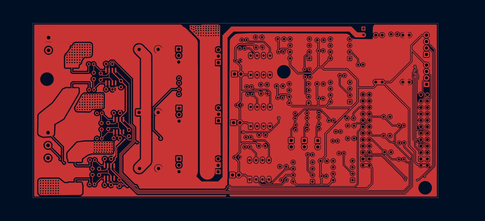
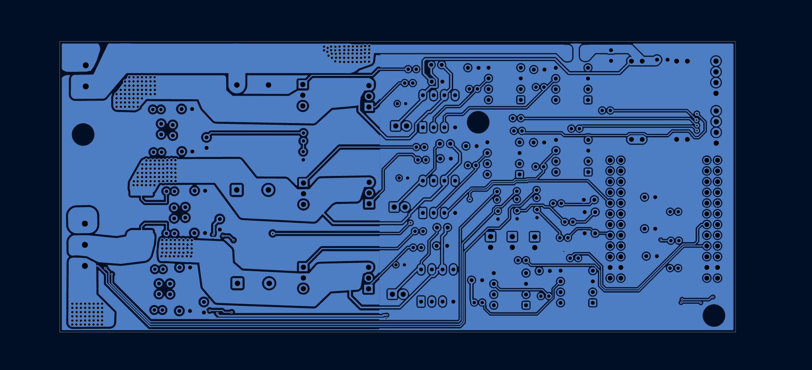

Bare-Metal Sensorless FOC ESC
What it does
A high-frequency sensorless field-oriented control drive engine for low-inductance UAV motors. Runs a rigid 24 kHz control loop on an STM32G431 with a State-Space Flux Observer, hardware CORDIC acceleration, predictive phase advance, and D-axis feedforward — all inside a 50 µs hard-sync budget.
The repository doubles as an engineering post-mortem: not just what works, but why textbook industrial algorithms fail under microhenry, ultra-low-mass operating conditions. Failure modes shared publicly so the FOC community can avoid them.
The build
Custom 2-layer PCB with discrete gate drivers, optocoupler isolation between logic and power, low-side shunt current sensing through dedicated amplifiers, and a buck converter stepping the 12 V bus down to 5 V for logic and gate drive.



The hard part
At 40–50% throttle, a 40 µs computational latency combined with reactive back-EMF cross-coupling (V = −ω · L · Iq) forces massive D-axis current spikes that derail the flux observer. The motor crashes into "the jerk" — a non-linear instability boundary unique to microhenry, ultra-low-mass environments.
FAILURE · ADC SLEW LIMITING
Clamping di/dt starved the observer. A 31 µH coil at 12 V naturally generates a ~387,000 A/s current rise rate — typical hardware anti-aliasing filters physically cannot pass this, so the observer reads a clipped waveform.
Fix: Injected ADC sampling aligned to the PWM center-count event (the "quiet zone"), reading clean phase currents without hardware filtering that would distort them.
FAILURE · DIGITAL FLYWHEEL PLL LAG
Inertial filters on the observer angle introduced excessive mathematical phase lag, failing to track the sharp mechanical acceleration of light drone props. The estimator converged to a "smooth" wrong answer.
Fix: Alpha-beta tracking filter as a digital flywheel — predictive momentum instead of lag-inducing low-pass. Combined with a 40 µs predictive phase advance that aims voltage where the rotor will be.
FAILURE · 48 kHz PWM / 24 kHz FOC DEADTIME
Asymmetrical multirate execution (48 kHz PWM, 24 kHz FOC) meant a 10% throttle command required 2.08 µs pulses. The gate driver's unavoidable 0.5 µs deadtime physically swallowed a huge fraction — starving the stator of the voltage the observer expected.
Fix: Reverted to strictly synchronous 1:1 execution — 24 kHz PWM / 24 kHz FOC — preserving physical pulse widths across the full throttle range.
Firmware
5-stage spooling sequence from cold start to closed-loop lock. Each transition happens under firmware control, no external synchronization.
// OFF → CALIBRATE → ALIGN → RAMP → BLEND → CLOSED_LOOP_FOC
enum State { OFF, CALIBRATE, ALIGN, OPEN_LOOP_RAMP,
FOC_BLEND, CLOSED_LOOP_FOC };
Predictive phase advance — compensates the ~40 µs CPU + PWM hardware delay by aiming voltage where the rotor will be:
theta_cmd = theta_est + omega_est * 40e-6f;
D-axis feedforward — cancels reactive cross-coupling directly in the Inverse Park Transform, so the observer sees a linear system even at 30,000+ RPM:
Vd_ff = -omega_est * Ls * Iq;
Core control loop executes in exactly 2,728 clock cycles: 16.05 µs total — well within the 50 µs budget of the 24 kHz loop. Telemetry streams a 49-byte binary struct at 1 kHz over a 2 Mbaud UART, visualized in a custom PyQtGraph GUI (Id, Iq, Vd, Vq, phase lag angle).